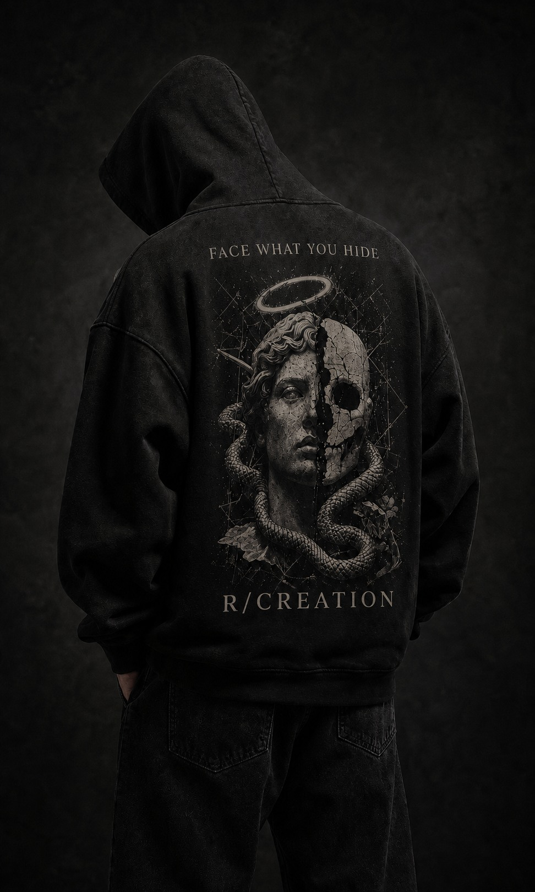
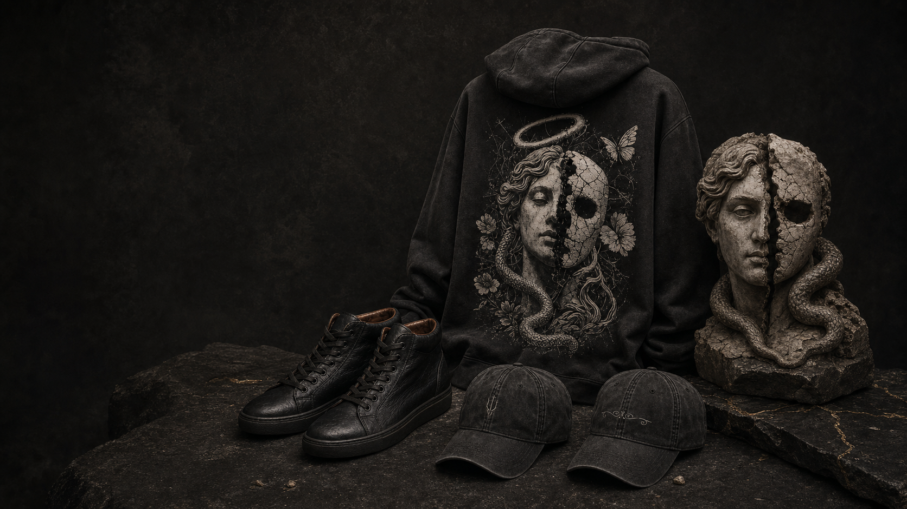
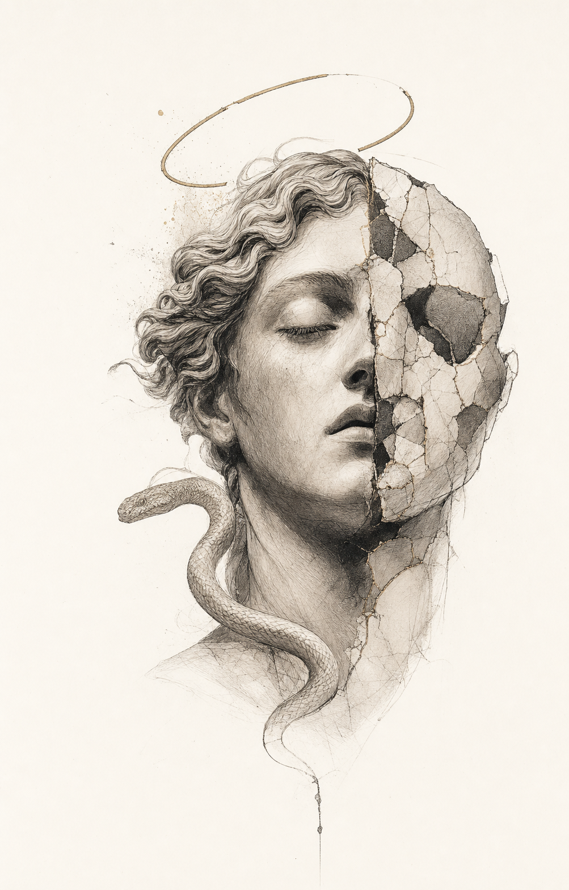
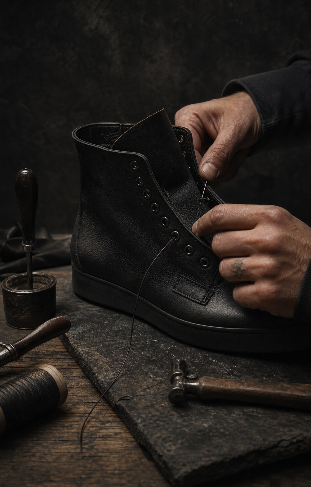

01
R/CREATION
Emotion translated into wearable daily pieces: direct enough to live in, considered enough to hold meaning.

Independent founder / Slovakia
I built R/CREATION to turn the inner life into objects you can carry: apparel for the everyday, footwear shaped by hand, and Hades Theory as the world beneath both.
Explore the first chapterClothing can cover the body without concealing the person.
I design around contradiction: restraint and chaos, armor and vulnerability, the face shown and the face protected. This is an independent studio, built one tested chapter at a time.

The medium changes. The source does not.

Emotion translated into wearable daily pieces: direct enough to live in, considered enough to hold meaning.

The same emotional language shaped by hand into limited, numbered objects where construction becomes part of the story.
The mythology, writing, symbols and chapters beneath both: a study of what pressure reveals and what reconstruction can become.
I move every chapter through the same four stages before asking anyone to wear it.
Emotion becomes language.
Language becomes garment and form.
Samples are worn, revised and earned.
Only finished chapters enter the world.